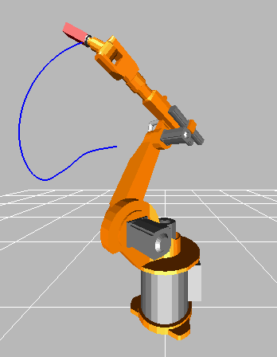
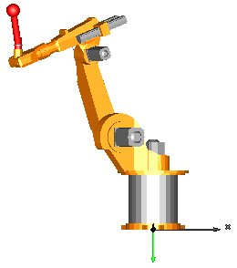

This package contains models of the robot r3 of the company Manutec. These models are used to demonstrate in which way complex robot models might be built up by testing first the component models individually before composing them together. Furthermore, it is shown how CAD data can be used for animation.
The following models are available:
oneAxis Test one axis (controller, motor, gearbox). fullRobot Test complete robot model.
The r3 robot is no longer manufactured. In fact the company Manutec does no longer exist. The parameters of this robot have been determined by measurements in the laboratory of DLR. The measurement procedure is described in:
Tuerk S. (1990): Zur Modellierung der Dynamik von Robotern mit
rotatorischen Gelenken. Fortschrittberichte VDI, Reihe 8, Nr. 211,
VDI-Verlag 1990.
The robot model is described in detail in
Otter M. (1995): Objektorientierte Modellierung mechatronischer
Systeme am Beispiel geregelter Roboter. Dissertation,
Fortschrittberichte VDI, Reihe 20, Nr. 147, VDI-Verlag 1995.
This report can be downloaded as compressed postscript file
from: http://www.robotic.dlr.de/Martin.Otter.
The path planning is performed in a simple way by using essentially the Modelica.Mechanics.Rotational.KinematicPTP block. A user defines a path by start and end angle of every axis. A path is planned such that all axes are moving as fast as possible under the given restrictions of maximum joint speeds and maximum joint accelerations. The actual r3 robot from Manutec had a different path planning strategy. Todays path planning algorithms from robot companies are much more involved.
In order to get a nice animation, CAD data from a KUKA robot is used, since CAD data of the original r3 robot was not available. The KUKA CAD data was derived from public data of KUKA available at: http://www.kuka-roboter.de/english/produkte/cad/low_payloads.html. Since dimensions of the corresponding KUKA robot are similar but not identical to the r3 robot, the data of the r3 robot (such as arm lengths) have been modified, such that it matches the CAD data.
In this model, a simplified P-PI cascade controller for every axes is used. The parameters have been manually adjusted by simulations. The original r3 controllers are more complicated. The reason to use simplified controllers is to have a simpler demo.
Extends from Modelica.Icons.ExamplesPackage (Icon for packages containing runnable examples).| Name | Description |
|---|---|
| Model of one axis of robot (controller, motor, gearbox) with simple load | |
| 6 degree of freedom robot with path planning, controllers, motors, brakes, gears and mechanics | |
| Library of components of the robot |
 Modelica.Mechanics.MultiBody.Examples.Systems.RobotR3.oneAxis
Modelica.Mechanics.MultiBody.Examples.Systems.RobotR3.oneAxisWith this model one axis of the r3 robot is checked. The mechanical structure is replaced by a simple load inertia.
Extends from Modelica.Icons.Example (Icon for runnable examples).
| Name | Description |
|---|---|
| mLoad | Mass of load [kg] |
| kp | Gain of position controller of axis 2 |
| ks | Gain of speed controller of axis 2 |
| Ts | Time constant of integrator of speed controller of axis 2 [s] |
| startAngle | Start angle of axis 2 [deg] |
| endAngle | End angle of axis 2 [deg] |
| swingTime | Additional time after reference motion is in rest before simulation is stopped [s] |
| refSpeedMax | Maximum reference speed [rad/s] |
| refAccMax | Maximum reference acceleration [rad/s2] |
Modelica.Mechanics.MultiBody.Examples.Systems.RobotR3.fullRobotThis is a detailed model of the robot. For animation CAD data is used. Translate and simulate with the default settings (default simulation time = 3 s). Use command script "modelica://Modelica/Resources/Scripts/Dymola/Mechanics/MultiBody/Examples/Systems/fullRobotPlot.mos" to plot variables.

Extends from Modelica.Icons.Example (Icon for runnable examples).
| Name | Description |
|---|---|
| mLoad | Mass of load [kg] |
| rLoad[3] | Distance from last flange to load mass [m] |
| g | Gravity acceleration [m/s2] |
| refStartTime | Start time of reference motion [s] |
| refSwingTime | Additional time after reference motion is in rest before simulation is stopped [s] |
| Reference | |
| startAngles | |
| startAngle1 | Start angle of axis 1 [deg] |
| startAngle2 | Start angle of axis 2 [deg] |
| startAngle3 | Start angle of axis 3 [deg] |
| startAngle4 | Start angle of axis 4 [deg] |
| startAngle5 | Start angle of axis 5 [deg] |
| startAngle6 | Start angle of axis 6 [deg] |
| endAngles | |
| endAngle1 | End angle of axis 1 [deg] |
| endAngle2 | End angle of axis 2 [deg] |
| endAngle3 | End angle of axis 3 [deg] |
| endAngle4 | End angle of axis 4 [deg] |
| endAngle5 | End angle of axis 5 [deg] |
| endAngle6 | End angle of axis 6 [deg] |
| Limits | |
| refSpeedMax[6] | Maximum reference speeds of all joints [rad/s] |
| refAccMax[6] | Maximum reference accelerations of all joints [rad/s2] |
| Controller | |
| Axis 1 | |
| kp1 | Gain of position controller |
| ks1 | Gain of speed controller |
| Ts1 | Time constant of integrator of speed controller [s] |
| Axis 2 | |
| kp2 | Gain of position controller |
| ks2 | Gain of speed controller |
| Ts2 | Time constant of integrator of speed controller [s] |
| Axis 3 | |
| kp3 | Gain of position controller |
| ks3 | Gain of speed controller |
| Ts3 | Time constant of integrator of speed controller [s] |
| Axis 4 | |
| kp4 | Gain of position controller |
| ks4 | Gain of speed controller |
| Ts4 | Time constant of integrator of speed controller [s] |
| Axis 5 | |
| kp5 | Gain of position controller |
| ks5 | Gain of speed controller |
| Ts5 | Time constant of integrator of speed controller [s] |
| Axis 6 | |
| kp6 | Gain of position controller |
| ks6 | Gain of speed controller |
| Ts6 | Time constant of integrator of speed controller [s] |